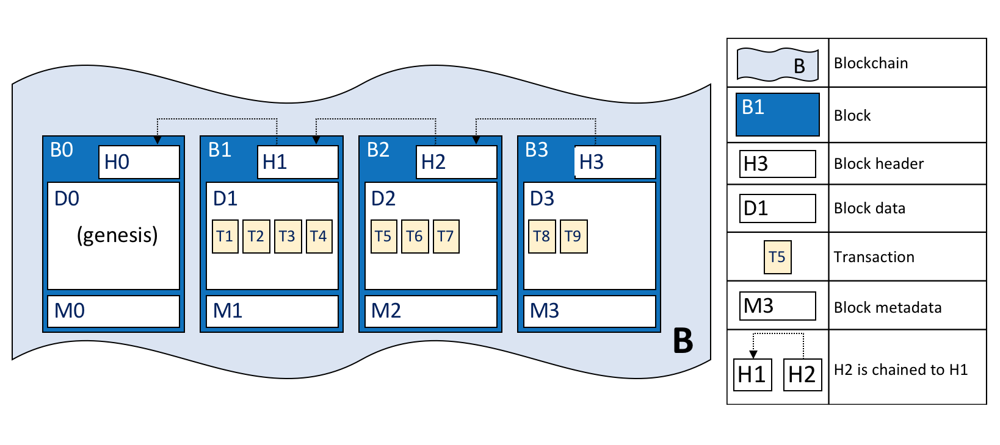

如何做一个区块链浏览器
对于区块链，所有的数据都是开放的，但不是每个人都能写代码去查看链上的交易，大多数人会通过一个公开的窗口来查看数据。这个公开的窗口就是区块链浏览器。
区块链上的数据会持续增加，对于数据的持久化和查询是浏览器的关键。本文会说明一种区块链浏览器的设计思路。
1. 系统设计
当一笔交易上链之后，就会存储到链上的账本中，但是账本中的数据无法直接展示。所以需要对这些账本数据进行解析，并存储，然后再从不同的维度去做对数据进行展示。系统本身并不会很复杂，整体的设计如下：
整个系统做的事情就是将区块链上的数据拉取下来，放到数据库中，然后通过一个 API 服务
在系统中有两个部分很重要，一个是区块的解析器，一个是拉取区块的部分。
1.1 存储选型
数据存储的选型很重要，使用 MySQL 存储会带来一些问题，字段扩展困难，存储扩展不方便。除了存储之外，这些数据还需要能够支持多维度的搜索，这点 MySQL 显然也无法满足。
区块链通常使用 kv 数据库做存储，通常是 LevelDB、CauchDB、TiKV 等等，但是这类的数据库，对于搜索的支持比较差。而对于浏览器来说，搜索则是一个最重要的部分。
在这样的情况下， ElasticSearch 是一个很好的选择，ES 支持本身支持大量数据的存储，而且可以支持水平扩展。实时的搜索也能够满足前端数据展示的需要。
1.2 解析器的设计
区块链就是一个链状的结构，所有的区块通过计算前一个区块的 hash 连接在一起：

每一个区块中则会打包一系列的交易：
在解析区块的时候，需要不断的将区块层层打开，直到将里面的每一笔交易都解析出来。然后按照不同的分类存储进 ES 中。看起来是一个挺复杂的过程，可以通过设计成单个接口来完成。
1.3 安全的考虑
因为浏览器是一个开放的系统，所有人都可以来访问，那么对于系统的安全就需要特别重视，避免有人对系统进行攻击。在这里需要防护的类型有两种：
- DDOS 攻击
- 怕有人通过爬虫来爬取系统中的数据
在网关层，可以部署一些防火墙，在 API 层，可以使用了 IP 的限制策略，比如限制同一个 IP 在一段时间内的最大访问次数。最大程度上保持浏览器的稳定运行。
2. 遇到的问题
完成上面的设计并实现之后，其实已经可以使用了。但发现在实际的使用过程中，还是会出现一些问题。
2.1 如何处理存量数据
在拉取区块链的数据时，区块中可能已经存在了很多数据，如果使用单线程去拉取数据，可能会需要很长的时间。既然单个线程拉取区块的速度不够快，那就换成多个线程，于是换成了如下的模式：
这样一来，拉取的速度就快了很多，但是如果链上的数据很多，这种方式还是不太够，
但到这里，其实就没办法再通过增加线程来加快拉取的速度。因为在解析区块的时候，是通过新起一个线程去解析，如果区块拉取的太快，会导致解析的线程数量急剧增加，最后导致程序崩溃。
所以要通过其他的方式来提升拉取速度。
既然单个实例无法继续提升性能，那就通过多个实例来提升，但是这样会引入新的问题，就是怎么在多个实例之间去同步状态。
分析一下就可以发现，很多的中间数据在区块爬取的过程中器是无需统计，比如每分钟产生的区块数和每分钟产生的交易数。其实只需要在多个实例之间去同步区块的高度，让不同的区块去拉取不同的高度。
这里为了减少系统的额外依赖，最后决定使用 MySQL 的悲观锁来同步区块高度，为了减少加锁的频率，降低获取锁的次吃。在同步高度的时候，会一次性去取一批高度，比如获取了 10 个高度，直接把 MySQL 中的高度更新 10。
因为每个实例中本身就有多个线程在拉取数据，避免每个线程在拉取的时候都来获取一个高度。就通过在实例中线程的数量来获取区块高度，比如线程的数量是 10，那就直接在 MySQL 中抢占 10 个高度，然后同时去拉取。
这样处理之后，拉取区块速度就大大提升了。拉取线上 5 千万的存量数据大概只需要 5 天左右的时间，这样是完全可以接受的。
存量数据拉取完成之后，就可以恢复到单实例，多线程的拉取模式，这样更能节省资源。
2.2 区块处理失败
在拉取区块的过程中，有可能会有各种原因导致区块拉取失败。这个时候需要对处理失败的区块重新处理。
在这里的设计中，通过一种比较简单的方式进行处理，把处理的失败的区块放到一个失败中，然后会有一个线程去监听这个失败队列，从其中获取高度重新处理。
3. 读写分离
但是到目前为止，这个浏览器还称不上完美。现在区块的解析和拉取区块是绑定在一起的，es 写入的错误也会导致整个的区块拉取失败。不得不通过重试的方式来完成拉取。这样会影响整体的拉取速度。
随着区块链的业务越来越多，产生区块的速度也越来越快。当前的的这种拉取的方式有可能无法跟上区块的拉取速度。所以需要引入消息队列来让区块和区块的解析两部分功能彻底解耦，就像下面这样。
这样将区块的拉取和解析互相不阻塞，系统也会更加稳定。
文 / Rayjun